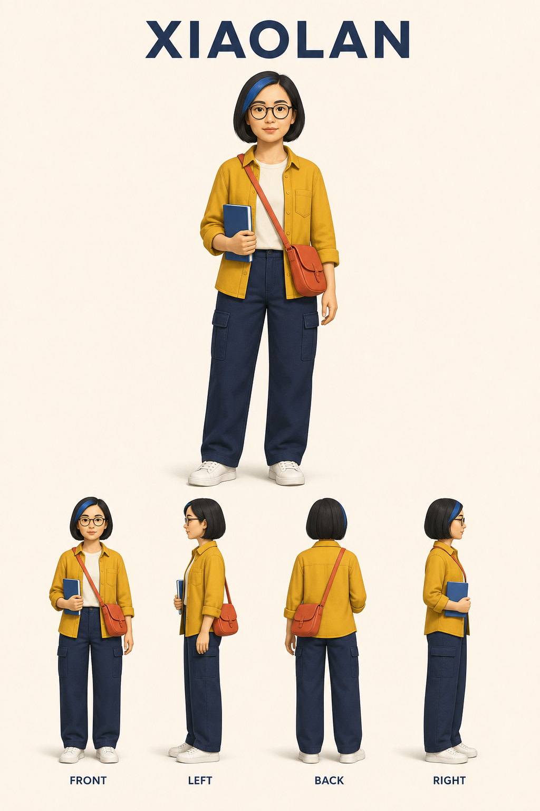
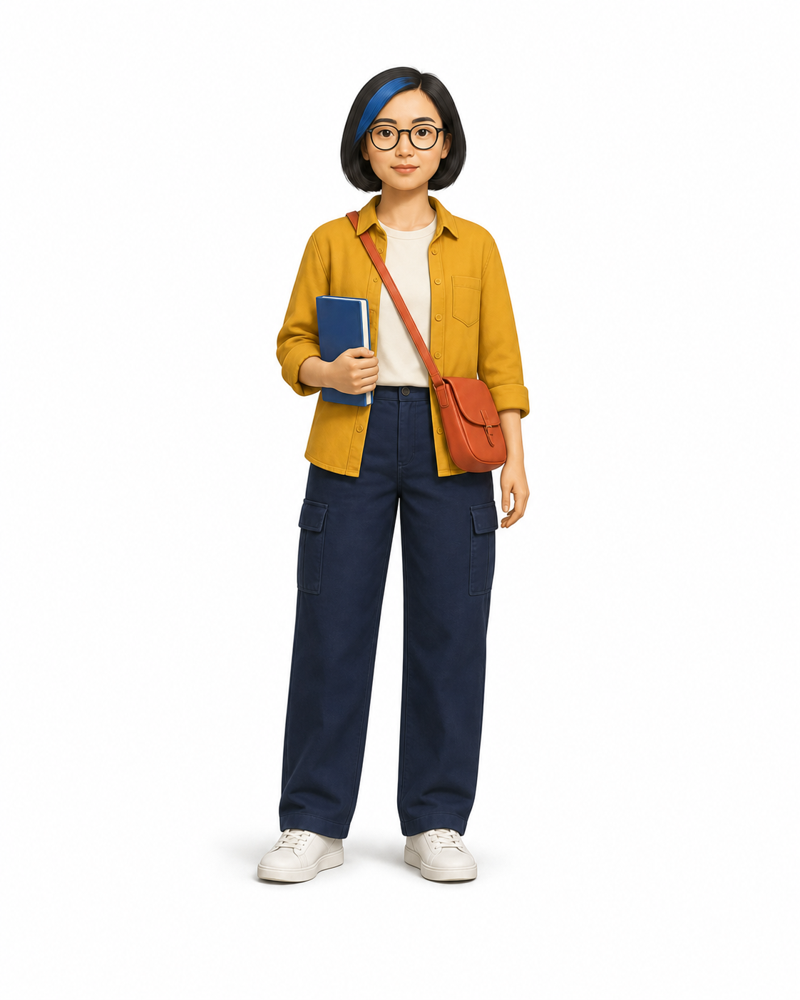
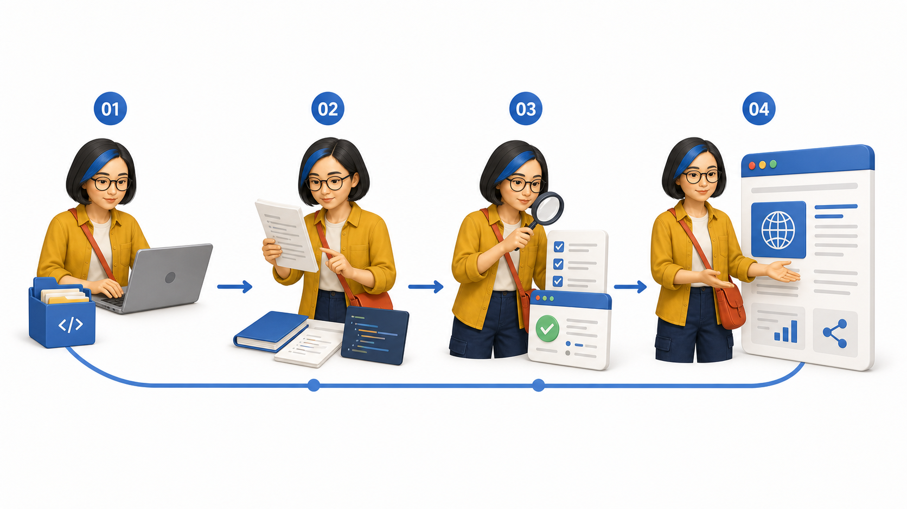

读者一眼认出是同一个人
- 脸型与五官比例
- 发型与发际线
- 身体比例与年龄感
- 固定服装、鞋子和配件
RESEARCH 08 / CHARACTER CONSISTENCY
它不是一个新的图像模型。它把人物照片、角色确认、身份参考、文章理解和图片交付编排成一条可重复使用的 Agent 工作流。

Skill 负责路由、角色状态、视觉合同、文件版本与交付规则
Agent 负责读完整文章、选择认知锚点、组织每张图片方案
图像模型负责身份理解、角色保真、动作场景与最终像素
00 / THE SHORT ANSWER
LAB / OUR IMAGEGEN DEMO


收集仓库 → 阅读技能与脚本 → 验证证据 → 发布 Web 结论

蓝色挑染、黑色短发、圆框眼镜、芥末黄外套、海军蓝长裤与珊瑚红挎包，在四个动作中均可识别。
电脑、代码文件、检查表、放大镜和网页窗口分别承担四步研究流程，不改变角色身份。
本次样张说明参考图能约束生成；仍需更多角色、模型与重复轮次实验，才能量化一致性。
GUIDE A / HOW TO USE IT
confirmed它们不是三个不同功能，而是同一条工作流的不同输入深度。
适合先探索方向。AI 会补足大部分结构，因此画面更概括，也更依赖模型判断。
适合文章尚未写完时预排视觉结构。章节关系明确，但具体论据和转折仍可能不足。
最适合正式生产。AI 可以识别总判断、机制、逻辑转折、冲突与行动结论，减少装饰性配图。
请使用已确认角色，为这篇文章制作正文配图。
重点解释：它不是新模型，而是角色一致性工作流。
先输出图片计划，再逐张生成，并标注插入位置。你提供人物原始图、确认决定、文章或目标、发布要求
AI + Skill 提供文章理解、认知锚点、场景计划、角色状态和文件规则
图像模型提供参考图理解、人物动作、场景物件和最终 PNG
没有生图工具时仍可交付图片计划、提示和插入位置，但不会产生最终图片
GUIDE B / STYLE EXPANSION
越强烈地改变五官和身体比例，越需要额外参考与人工复核。
保留面部结构和人体比例，只改变光影、材质与背景语言。
适合：专业文章、个人品牌在现有风格上改变色板、材质和几何细节，迁移成本最低。
适合：教程、SOP、知识栏目减少面部细节，身份更多依赖发型、眼镜、服装和配件。
适合：观点、商业内容笔触和轮廓波动更大，需要锁定五官比例与颜色锚点。
适合：随笔、故事、课程身体与五官比例被强烈重构，必须依赖标志性外观识别。
适合：轻内容、贴纸、栏目符号夸张动作和镜头会放大侧脸、遮挡与配件镜像问题。
适合：叙事测试、视觉实验每个风格包都应把视觉选择变成可检查的合同，并与人物身份规范分开保存。
准确描述当前仓库：固定角色 + 固定风格 + 动态文章场景
扩展目标固定角色 + 可选风格包 + 动态文章场景
01 / CAPABILITY ANATOMY
照片是唯一身份来源。Agent 生成角色设定板、干净单人物参考图和人物规范，再由注册脚本写入本地角色包。草稿不能进入文章生产。
Agent 不按段落平均配图，而是寻找总判断、易误解机制、逻辑转折、冲突和行动结论。每个锚点再选择“流程拆解”或“核心动作”。
每个认知锚点独立生成一张 PNG；失败时只修一个主要问题，最多两次针对性重试。默认不修改文章，只有用户明确要求才写回 Markdown。
02 / THE OPERATING LOOP
提取可观察的脸型、发型、服装和配件，不猜测敏感属性。
主角色 + 四视图、干净参考图、人物规范，状态仍是 draft。
这是唯一必须停下来的环节。未确认角色不能用于文章配图。
注册表只解析 confirmed 角色；后续不再需要重复上传照片。
决定图片数量、表现模式、动作、物件和建议插入位置。
检查语义、身份、留白和文字，保存版本并报告实际路径。
03 / UPSTREAM EVIDENCE · RETAINED
适合步骤、方法、教程和工作流。一个角色在 3—5 个节点承担不同动作。
适合观点、冲突和反直觉关系。一个人物、一个动作、一个可见结果。


固定画面合同16:9 横版 · 纯白页面 · 主体 55%—65% · 1—3 个主要物件 · 3—5 个场景主色
明确不做封面海报 · 复杂信息图 · 完整空间背景 · 大段文字 · 多个竞争隐喻
04 / WHERE IT FITS
从完整文章选择 1—8 个认知锚点，让作者 IP 持续出现在系列内容中。
交付：正文插图 + 建议插入位置把输入到输出压缩为 3—5 个节点，同一角色在各节点执行不同动作。
交付：流程拆解图将反直觉判断压缩成一个人物与一个物理关系，减少装饰性配图。
交付：核心动作图固定人物身份、服装和配件，建立跨文章可识别的内容栏目。
价值：个人 IP 的视觉连续性为不同成员创建确认角色，按文章作者切换当前角色。
价值：多角色注册与激活保持人物身份不变，让动作和物件随栏目主题变化，形成统一视觉记忆。
价值：身份与场景解耦参考图不能保证跨镜头、遮挡和复杂动作的精确连续性，需要更强角色模型或制作管线。
原因：身份一致性没有算法保证这套视觉合同刻意限制为一个关系和少量物件，不适合精确数据表达。
原因：表达密度与任务冲突图像模型内生文字仍可能错误，应改用无字底图与确定性排版。
原因：文本不是确定性输出当前显示 9 个场景
05 / EXTENSION ROADMAP
不改变 Skill 定位，先补足稳定性、文字与运行记录。
保存原文证据、锚点、模式、动作、物件、插入位置和状态。
组合视觉特征、服装色和人工评分，检测脸、发型与配件漂移。
先生成无字底图，再用 SVG/Canvas/Pillow 叠加准确标签。
记录模型、参考图版本、成本、耗时、失败原因和重试差异。
让角色、文章锚点和图片候选在同一界面可见。
草稿、确认、版本对比、回滚、多角色和身份规范可视化管理。
文章段落、认知锚点、候选图和插入位置并排审核并局部重生成。
角色身份保持独立，风格插件分别定义画面、文字与评估合同。
记录照片授权、角色所有者、可用渠道、期限和发布审批。
从主观样张展示升级为可重复的实验与消融。
覆盖动作、角度、遮挡、情绪和多角色，比较不同参考图策略。
评价图片集合是否覆盖总判断、机制、转折和行动结论且不重复。
用同一图片计划比较身份、语义、文字、成本和耗时。
追踪同一角色经过 10、50、100 篇文章后的误差累积。
06 / RESEARCH VERDICT
阶段路由、按需读参考、失败降级完整。
把唯一强制确认放在身份定稿点。
角色包简单、清楚、可跨任务解析。
没有训练、推理或一致性算法。
适合研究角色一致性工作流 · 内容语义到视觉规划 · Agent 本地状态 · 人工确认点
不应误读不是角色模型 · 不是通用插图库 · 不是企业级内容平台 · 不保证像素级一致
FIXED SOURCE
8bcc522192a9f757cbf2b52cefabc9ffbfb1712c